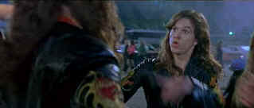

| Rock
Star (SE)/ C+, A |
| Warner
/2001/106/ANA 2.35 |
Rock Star is a movie is the saga of
the rise to rock heaven of Chris Cole. It's about finding himself, expressing
himself., being true to himself. One dream turns into reality, morphs
into another reality, then gives way to yet another dream of self
expression. Ultimately,
Chris's journey is insignificant. If you can't true to yourself how can
you be true to someone else; it may not particularly well-developed or
examined, but the message it clearly there.
This is one emotionally vacuous trip with concerts strung
out end to end. The first hour or more
plays at one level and has little variation. The script has a lack of
humor about itself or the scene; it takes itself seriously and it's not
very serious.
 |
| Are
you talkin' to me? ©Warner |
The music fails to connect with me and I am sure I
would have enjoyed the movie more if I could have appreciated it. It's a
great looking film with excellent production values. Some of the
on-screen bickering between the band members is ridiculous. The later
scene when Chris tries out for Steel Dragon, which echoes the
scene when he leaves his own band is annoying as it intentionally mimics
the first scene.
Wahlberg is effective enough in the rather bland role of Chris/Issy
and Jennifer Anniston has good screen presence stands up
to the role well of girl friend and manager Emily. Minor casting is unexceptional and and somewhat
vanilla. The colossal stupidity of the main character makes it virtually
impossible to get into any level of seriousness.
It's a pretty picture to look at but in the end it's a very empty
story with no meat on the bones. It's simply artificial. There's
some truly inane and stupid dialogue amongst the wives and girlfriends
in the limousine on the road. The photography and overall look of the film is terrific. Stephen
Herek's pacing and command over the production maximizes inflates an
otherwise limp structure. Best line in the film is delivered by
Emily: "I'm a businesswoman and rule number one is
that you go where the talent is and all the fucking talent that was in
this band just left the room."
Opening credit sequence has incredible blacks,
wonderful color, detail at reference level and surround sound captures
the venue to excellent effect. Bass is fabulous. It resounds without
being too boomy. Chris's room is an explosion of garish entertaining
color. All the details of the posters are well delineated. Shadow detail
is lovely. Enormous detail is maintained in the darker scenes and the
range is full. Stephen Herek delivers a comfortable commentary track
elaborating on the production challenges.
Reviewed on a Sharp 9000VX DLP Projector
|
|
|
|

Selections from the Feature Archive include articles on
Akira Kurosawa, Blonde Bimbos,
Frank
Darabont, Steven Culp,
John
Herzfeld or Vietnam: The
Hollywood Pariah, and many more....
Thorough
a Lens, Obliquely

Flicks about Hollywood make fascinating material, but the establishment
isn't always totally forthcoming. Click on the Hollywood montage for a
look at some of the best Hollywood films about the movie-making
business.

Lady
Eve, The (SE) A,C+

Wonderful classic comedy from writer/director Preston Sturges. Henry
Fonda and Barbara Stanwyck star.

The major studio vaults are filled with
incredible film treasures which few have seen the light of DVD.
Open
the Vaults

The
Movie Poster Archive includes extensive poster images from the films of
stars like Susan Hayward, Kirk Douglas, Katharine Hepburn and many
more. Our featured star is Lana
Turner.

 Have
you visited Home Theater Talk
lately? One of the friendliest places on the Net for Home Theater and
DVD discussion, you can get help for installation problems or simply
share your opinions with other Vidiots. Have
you visited Home Theater Talk
lately? One of the friendliest places on the Net for Home Theater and
DVD discussion, you can get help for installation problems or simply
share your opinions with other Vidiots.

ISF Monitor
Calibrations in the Tristate New York area. Lots of hardware info
and frequent hardware peaks from video expert Kevin Miller. They may be
judgmental, but that's the point, isn't it. Lots of DVD reviews plus
news and more.
|